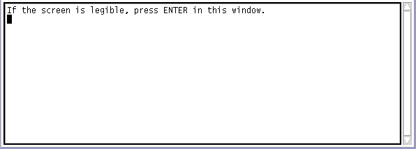
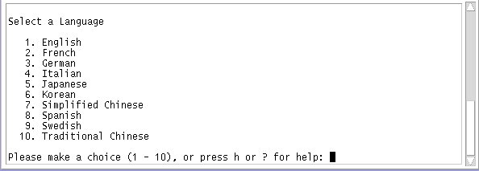
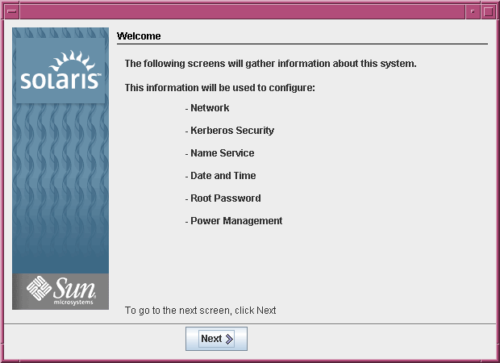
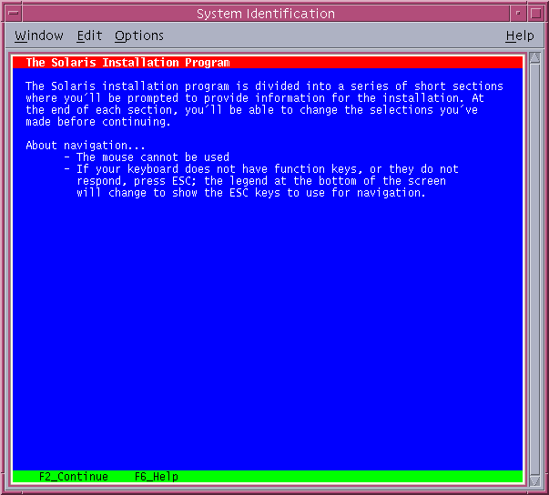
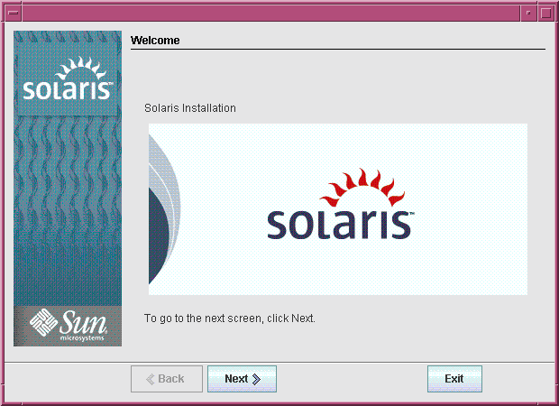
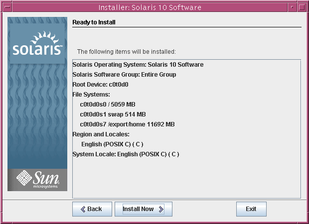

Document Information
Preface
1. Planning for a Solaris Installation From CD or DVD Media (Tasks)
2. Installing With the Solaris Installation Program (Tasks)
x86: Performing an Installation or Upgrade With the Solaris Installation Program
x86: To Install or Upgrade With the Solaris Installation Program With GRUB
Index
|
SPARC: Performing an Installation or Upgrade With the Solaris Installation Program
You can either install or upgrade the Solaris OS by using the
Solaris installation program. This section lists the tasks you need to perform to
install the Solaris OS, and provides detailed instructions about how to install the
Solaris OS from DVD or CD media.
SPARC: To Install or Upgrade With the Solaris Installation ProgramThis procedure describes how to install a standalone SPARC based system from CD
or DVD media.
Note - If you want to install the Solaris OS on a machine or
domain that does not have a directly attached DVD-ROM or CD-ROM drive, you
can use a DVD-ROM or CD-ROM drive that is attached to another machine.
For detailed instructions, refer to Appendix B, Installing or Upgrading Remotely (Tasks), in Solaris Express Installation Guide: Network-Based Installations.
Before You BeginPerform the following tasks before you begin your installation.
Ensure that you have the following media.
Verify that your system meets the minimum requirements. Your system should meet the following requirements.
Memory – 128 Mbytes or greater Disk space – 6.8 Gbytes or greater Processor speed – 200 MHz or greater
For detailed information about system requirements, see System Requirements and Recommendations. Gather the information you need to install the Solaris OS.
For information that you need to gather to install your system, see Checklist for Installation. If you are upgrading your system, see Checklist for Upgrading in Solaris Express Installation Guide: Planning for Installation and Upgrade.
Note - If you have a system that contains non-global zones, Solaris Live Upgrade is the recommended upgrade program or program to add patches. Other upgrade programs might require extensive upgrade time, because the time required to complete the upgrade increases linearly with the number of installed non-global zones. For information about upgrading with Solaris Live Upgrade, see Part I, Upgrading With Solaris Live Upgrade, in Solaris Express Installation Guide: Solaris Live Upgrade and Upgrade Planning.
(Optional) Back up your system. If you want to preserve any existing data or applications, back up the system. For detailed instructions about how to back up your system, see Chapter 23, Backing Up and Restoring File Systems (Overview), in System Administration Guide: Devices and File Systems.
- Insert the Solaris Operating System for SPARC Platforms DVD or Solaris Software
for SPARC Platforms - 1 CD.
- Boot the system.
- If the system is new, out-of-the-box, turn on the system.
- If you want to install a system that is currently running, shut down
the system.
The ok prompt is displayed.
- Start the Solaris installation program.
- To boot from the local DVD or CD and start the Solaris
installation GUI in a desktop session, type the following command.
ok boot cdrom
- To boot from the local DVD or CD and start the text
installer in a desktop session, type the following command.
ok boot cdrom - text - text
Specifies to run the text installer in a desktop session. Use this option to override the default GUI installer.
- To boot from the local DVD or CD and start the text
installer in a console session, type the following command.
ok boot cdrom - nowin - nowin
Specifies to run the text installer in a console session. Use this option to override the default GUI installer.
For detailed information about the Solaris installation GUI and text installer, see Solaris Installation Program GUI or Text Installer Requirements. If the operating system cannot locate a self-identifying keyboard, the next screen displays
keyboard layout selections.
Note - PS/2 keyboards are not self-identifying. You will be asked to select the keyboard
layout during the installation.
- (Optional) Select the desired keyboard layout from the screen below and press F2 to
continue.
Configure Keyboard Layout
+---------------------------------------------------------------------------+
| Please specify the keyboard layout from the list below. |
| |
| To make a selection, use the arrow keys to highlight the option and |
| press Return to mark it [X]. |
| |
| Keyboard Layout |
| ----------------------- |
| [ ] Serbia-And Montenegro |
| [ ] Slovenian |
| [ ] Slovakian |
| [ ] Spanish |
| [ ] Swedish |
| [ ] Swiss-French |
| [ ] Swiss-German |
| [ ] Taiwanese |
| [ ] TurkishQ |
| [ ] TurkishF |
| [ ] UK-English |
| [ X] US-English |
| |
| F2_Continue F6_Help |
+---------------------------------------------------------------------------+ The system configures the devices and interfaces and searches for configuration files. If
you selected a GUI installation in the earlier steps, the next two screens
confirm GUI functioning.
- (Optional) In the following screen, press Enter.
Starting Solaris Interactive (graphical user interface)
Installation
+------------------------------------------------------------+
| You must respond to the first question within 30 seconds |
| or the installer proceeds in a non-window environment |
| (console mode). |
| |
| If the screen becomes blank or unreadable the installer |
| proceeds in console mode. |
| |
| If the screen does not properly revert to console mode, |
| restart the installation and make the following selection: |
| |
| Solaris Interactive Text (Console session) |
-------------------------------------------------------------+
Note - If your system has insufficient memory to display a graphical user interface
(GUI), the program exists and displays an error message. You can upgrade your
memory and restart the installation. For an alternative that requires less memory to install, restart the installation and
follow these steps:
Select the Solaris Express option. Choose the Solaris Interactive Text (console session) option. This alternative provides a text-mode installation that requires additional configuration input.
After progress messages are completed, another confirmation screen is displayed.
- (Optional) Move your cursor into the following text screen and press Enter.
A list of language choices is displayed.
- In the following screen, select the language you want to use during the installation,
and press Enter.
After a few seconds, the Solaris Installation Program Welcome screen appears.
If you are running the Solaris GUI installation program, the screen that is shown in Figure 2-1 is displayed. If you are running the Solaris text installer in a desktop session, the screen that is shown in Figure 2-2 is displayed.
Figure 2-1 Solaris GUI Installation Program Welcome ScreenFigure 2-2 Solaris Text Installer Welcome Screen
- Click Next to begin the installation. If you are prompted, answer the system
configuration questions.
After you answer the configuration questions, the Welcome to Solaris screen appears. Figure 2-3 Welcome to Solaris ScreenThe Installer Questions screen appears.
- Decide if you want to reboot the system automatically and if you want
to automatically eject the disc. Click Next.
The Specify Media screen appears.
- Specify the media you are using to install. Click Next.
The License panel appears.
- Accept the license agreement to continue the installation. Click Next.
The Solaris installation program then determines if the system can be upgraded. To
upgrade, the system must have an existing Solaris root (/) file system. The
Solaris installation program detects the necessary conditions and then upgrades the system. The Select Upgrade or Initial Install screen appears.
- Decide if you want to perform an initial installation or an upgrade. Click
Next.
The next screen enables you to choose a default installation or a custom
installation.
- Select the type of installation you want to perform. Click Next.
Note - The text installer does not prompt you to select a Default or Custom
Installation. To perform a default installation, accept the default values that are provided
in the text installer. To perform a custom installation, edit the values in
the text installer screens.
- If you are prompted, answer any additional configuration questions.
When you have provided the information that is required to install the system,
the Ready to Install screen is displayed. Figure 2-4 Solaris Installation Ready to Install Screen
- Click Install Now to install the Solaris software. Follow the instructions on the
screen to install the Solaris software.
When the Solaris installation program finishes installing the Solaris software, the system reboots
automatically or prompts you to reboot manually. If you are installing additional products, you are prompted to insert the DVD
or CD for those products. For installation procedures,
refer to the appropriate installation documentation. After the installation is finished, installation logs are saved in a file. You
can find the installation logs in the /var/sadm/system/logs and /var/sadm/install/logs directories.
- If you are performing an initial installation, the installation is complete. Go to
Step 16.
- If you are upgrading the Solaris software, you might need to correct some
local modifications that were not preserved. Continue to Step a.
- Review the contents of the /a/var/sadm/system/data/upgrade_cleanup file to determine whether you need
to correct local modifications that the Solaris installation program could not preserve.
- Correct any local modifications that were not preserved.
- If you did not select automatic reboot during the installation, reboot the system.
# reboot TroubleshootingIf you encountered any problems during the installation or upgrade, see Appendix A, Troubleshooting (Tasks), in Solaris Express Installation Guide: Custom JumpStart and Advanced Installations.
|